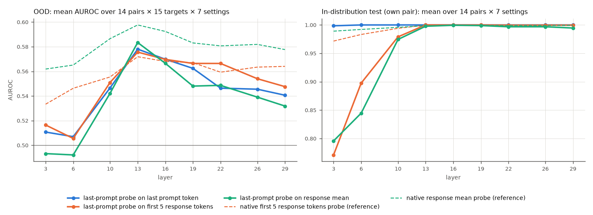
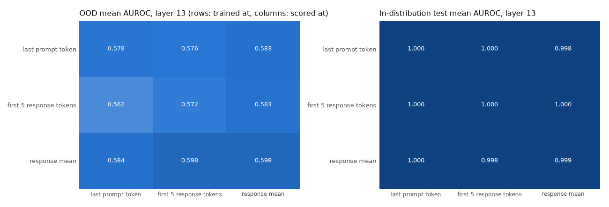
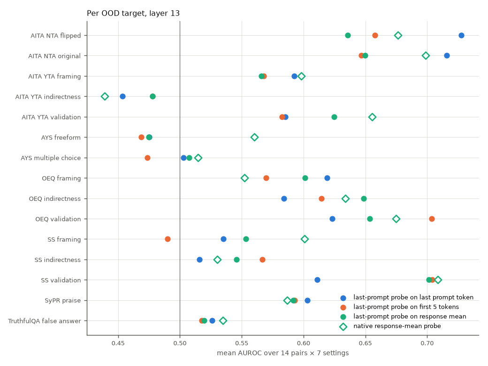
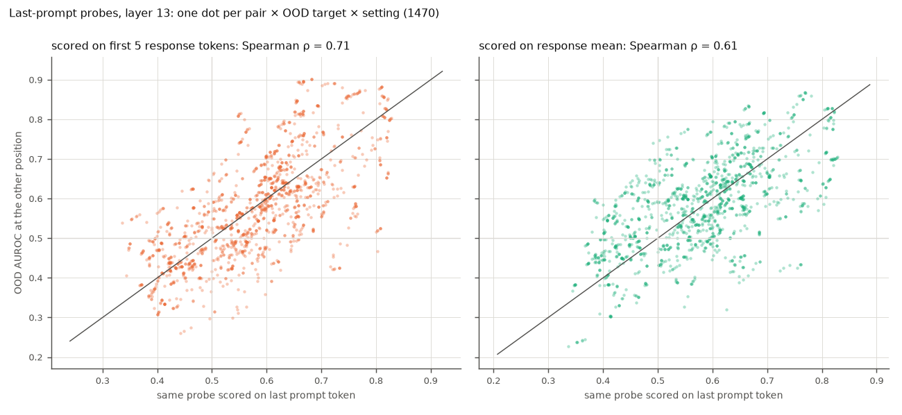
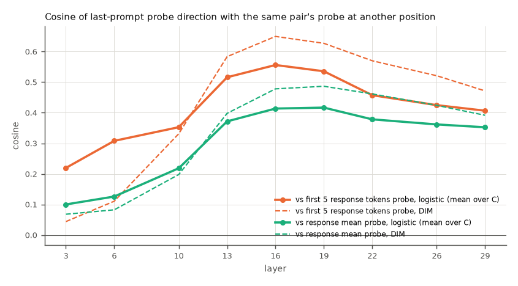

<title>Last-Prompt Probes Across Positions</title>
<link rel="preconnect" href="https://fonts.googleapis.com">
<link rel="preconnect" href="https://fonts.gstatic.com" crossorigin>
<link rel="stylesheet" href="https://fonts.googleapis.com/css2?family=IBM+Plex+Sans+Condensed:wght@500;600&family=IBM+Plex+Sans:ital,wght@0,400;0,500;0,600;1,400&family=IBM+Plex+Mono:wght@400;500&display=swap">
<style>
/* Layout: single reading column (~70ch) for prose; figures break out to a wider track; findings are numbered because the review cites them by number. Shares tokens with the other Step 1 reviews. */
:root {
  --bg: #f7f8fa;
  --surface: #ffffff;
  --ink: #14181f;
  --ink-2: #4a5160;
  --rule: #dde1e8;
  --accent: #104281;      /* the colormap's blue pole: AUROC near 1 */
  --anti: #b23434;        /* the colormap's red pole: AUROC near 0 */
  --chip: #e9eef6;
  --font-display: "IBM Plex Sans Condensed", "Arial Narrow", system-ui, sans-serif;
  --font-body: "IBM Plex Sans", system-ui, -apple-system, "Segoe UI", sans-serif;
  --font-data: "IBM Plex Mono", ui-monospace, "Cascadia Mono", Consolas, monospace;
}
@media (prefers-color-scheme: dark) {
  :root:not([data-theme="light"]) {
    --bg: #12151a; --surface: #1b1f26; --ink: #e8ebf0; --ink-2: #a9b0bd; --rule: #2d333d;
    --accent: #7fb0ec; --anti: #ef7a7a; --chip: #232a35; color-scheme: dark;
  }
}
:root[data-theme="dark"] {
  --bg: #12151a; --surface: #1b1f26; --ink: #e8ebf0; --ink-2: #a9b0bd; --rule: #2d333d;
  --accent: #7fb0ec; --anti: #ef7a7a; --chip: #232a35; color-scheme: dark;
}
* { box-sizing: border-box; }
body { background: var(--bg); color: var(--ink); font: 400 16px/1.6 var(--font-body); padding-inline: 16px; padding-block: 40px 72px; }
.page { max-width: 1180px; margin: 0 auto; display: grid; gap: 40px; }
.col { max-width: 70ch; min-width: 0; }
h1, h2, h3 { font-family: var(--font-display); text-wrap: balance; line-height: 1.15; margin: 0; }
h1 { font-size: clamp(2rem, 4.5vw, 2.9rem); font-weight: 600; letter-spacing: -0.01em; }
h2 { font-size: 1.55rem; font-weight: 600; padding-top: 18px; border-top: 1px solid var(--rule); }
h3 { font-size: 1.15rem; font-weight: 600; }
p, ul, ol { margin: 0; }
section { display: grid; gap: 16px; }
.eyebrow { font: 500 0.78rem/1.4 var(--font-data); letter-spacing: 0.08em; text-transform: uppercase; color: var(--ink-2); }
.lede { font-size: 1.12rem; color: var(--ink-2); }
.meta { display: flex; flex-wrap: wrap; gap: 8px; }
.meta span { font: 400 0.8rem/1.3 var(--font-data); background: var(--chip); padding: 5px 9px; border-radius: 4px; }
code, .num { font-family: var(--font-data); font-size: 0.9em; font-variant-numeric: tabular-nums; }
.num { white-space: nowrap; }
.hi { color: var(--accent); font-weight: 500; }
.lo { color: var(--anti); font-weight: 500; }
ul, ol { padding-left: 1.3em; display: grid; gap: 8px; }
.findings { list-style: none; padding: 0; counter-reset: f; gap: 28px; }
.findings > li { counter-increment: f; display: grid; grid-template-columns: 2.4rem minmax(0, 1fr); gap: 4px 12px; }
.findings > li::before { content: counter(f); grid-row: 1 / span 3; font: 600 1.5rem/1.1 var(--font-display); color: var(--accent); }
.findings > li > * { grid-column: 2; }
.findings h3 { margin-bottom: 2px; }
.findings p + p { margin-top: 8px; }
figure { margin: 0; display: grid; gap: 10px; min-width: 0; }
figure .frame { background: #ffffff; border: 1px solid var(--rule); border-radius: 6px; padding: 10px; overflow-x: auto; }
figure img { display: block; width: 100%; height: auto; min-width: 640px; }
figcaption { font-size: 0.9rem; color: var(--ink-2); max-width: 90ch; }
figcaption b { color: var(--ink); font-weight: 600; }
.grid3 { display: grid; grid-template-columns: repeat(auto-fit, minmax(300px, 1fr)); gap: 20px; }
.grid3 img { min-width: 0; }
.tablewrap { overflow-x: auto; border: 1px solid var(--rule); border-radius: 6px; background: var(--surface); }
table { border-collapse: collapse; width: 100%; font-size: 0.92rem; }
th, td { text-align: left; vertical-align: top; padding: 10px 14px; border-bottom: 1px solid var(--rule); }
tr:last-child td { border-bottom: 0; }
th { font: 600 0.78rem/1.3 var(--font-data); letter-spacing: 0.05em; text-transform: uppercase; color: var(--ink-2); background: var(--chip); }
td:first-child { font-weight: 600; white-space: nowrap; }
td.why { color: var(--ink-2); }
pre { margin: 0; font: 400 0.82rem/1.55 var(--font-data); background: var(--surface); border: 1px solid var(--rule); border-radius: 6px; padding: 14px 16px; overflow-x: auto; }
a { color: var(--accent); }
a:focus-visible { outline: 2px solid var(--accent); outline-offset: 2px; }
.answer { background: var(--surface); border: 1px solid var(--rule); border-radius: 6px; padding: 18px 20px; display: grid; gap: 10px; max-width: 78ch; }
.answer h2 { border: 0; padding: 0; font-size: 1.2rem; }
td.t { color: var(--ink-2); font-weight: 400; }
td.num, th.num { text-align: right; }
.swatch { display: inline-block; width: 10px; height: 10px; border-radius: 2px; margin-right: 6px; vertical-align: baseline; }
</style>

<main class="page">
  <header class="col" style="display:grid; gap:14px;">
    <div class="eyebrow">SycoScope v2 · Step 1 analysis · 30 Sep 2026</div>
    <h1>Last-Prompt Probes Across Positions</h1>
    <p class="lede">Can a probe trained on the last prompt token read sycophancy from the first five response tokens or the response mean? Every contrastive probe was scored, unchanged, at all three token positions of its own layer, on the 15 judged OOD targets and on its own pair's held-out contrastive test split.</p>
    <p>The other five directions, layer bands and logistic vs DIM are on the companion page, <a href="https://claude.ai/artifact/TQA2UaDHBQg41JhBcFjaGg">Position Transfer Directions</a>.</p>
    <p><b>Read with:</b> <a href="https://claude.ai/artifact/VUiePfsRgRAqN3kCWqbNuA">Transfer on Strong Probes</a>. The averages on this page are dominated by near-chance probes. For probes that score AUROC ≥ 0.70 at home, moving them loses 0.06–0.12 AUROC in every direction except last prompt → first 5.</p>
    <div class="meta">
      <span>Llama-3.1-8B-Instruct</span><span>synthetic_tefo_C_sweep</span><span>2,646 probes × 3 eval positions × 16 datasets</span><span>127,008 AUROCs</span><span>focus: 882 last-prompt probes</span>
    </div>
  </header>

  <section class="answer">
    <h2>Short answer</h2>
    <ul>
      <li><b>In distribution, yes, from layer 13 up.</b> On the contrastive test split, last-prompt probes score a mean AUROC of <span class="num">1.000</span> on the first 5 tokens and <span class="num">0.998</span> on the response mean at layer 13 (lowest of the 98 probes: <span class="num">0.970</span>). At layers 3 and 6 they do not transfer well: <span class="num">0.77–0.90</span> mean, with single probes as low as <span class="num">0.44</span>.</li>
      <li><b>Out of distribution, they work about as well as they do at their own position.</b> At layer 13 the mean OOD AUROC is <span class="num">0.578</span> at the last prompt token, <span class="num">0.576</span> on the first 5 tokens and <span class="num">0.583</span> on the response mean. At every layer from 10 up, moving the probe changes the pooled mean by at most <span class="num">0.02</span>.</li>
      <li><b>On the response mean, probes trained there are still better.</b> Native response-mean probes score <span class="num">0.598</span> at layer 13 against <span class="num">0.583</span> for the moved last-prompt probes, and they win in 61% of matched comparisons. They lead at every layer. On the first 5 tokens, the moved last-prompt probes match native first-5 probes (<span class="num">0.576</span> vs <span class="num">0.572</span> at layer 13).</li>
    </ul>
  </section>

  <section>
    <h2 class="col">Findings</h2>
    <ol class="findings col">
      <li>
        <h3>The last-prompt direction is readable in response tokens in distribution, from layer 13</h3>
        <p>In-distribution mean AUROC of last-prompt probes on the response mean rises from <span class="num">0.796</span> (layer 3) and <span class="num">0.845</span> (layer 6) to <span class="num">0.974</span> (layer 10) and <span class="num">0.995–0.999</span> from layer 13 to 29. The first 5 tokens follow the same pattern (<span class="num">0.771</span>, <span class="num">0.898</span>, <span class="num">0.979</span>, then <span class="num">1.000</span>).</p>
        <p>The contrastive labels are the system prompt itself, so this shows that the direction that separates the two system prompts at the last prompt token also separates their responses. It does not show on its own that the response tokens carry the behaviour. They may simply still encode which system prompt they attend to.</p>
      </li>
      <li>
        <h3>OOD, moving a last-prompt probe onto response tokens changes little on average</h3>
        <p>The three last-prompt curves in figure 1 stay within <span class="num">0.02</span> of each other from layer 10 up. The largest gaps are on the response mean at layers 3–6 (<span class="num">−0.015</span> to <span class="num">−0.017</span>, where everything is near chance), on the response mean at layer 19 (<span class="num">−0.014</span>) and on the first 5 tokens at layer 22 (<span class="num">+0.020</span>). All three last-prompt curves peak at layer 13.</p>
        <p>The same probe keeps a similar rank, but individual scores move. At layer 13 the Spearman correlation between a probe's AUROC at the last prompt token and at the other position is <span class="num">0.71</span> for the first 5 tokens and <span class="num">0.61</span> for the response mean, over 1,470 pair × target × setting blocks (figure 4). In 19% (first 5) and 22% (response mean) of those blocks the AUROC moves to the other side of 0.5.</p>
      </li>
      <li>
        <h3>The per-target shifts are large, and they cancel out in the mean</h3>
        <p>At layer 13, moving last-prompt probes to the response mean <span class="hi">gains</span> on SS validation (<span class="num">+0.090</span>), OEQ indirectness (<span class="num">+0.065</span>) and AITA YTA validation (<span class="num">+0.040</span>). It <span class="lo">loses</span> on AITA NTA flipped (<span class="num">−0.091</span>) and AITA NTA original (<span class="num">−0.066</span>) (figure 3).</p>
        <p>Among the OOD targets, only the two AITA NTA targets score best (or tied best, within 0.001) on last-prompt activations for probes from every training position. Even response-mean probes score <span class="num">0.690–0.699</span> there on the last prompt token, against <span class="num">0.560–0.566</span> on the first 5 tokens. So these labels look partly predictable from the prompt before the model responds. On the validation and indirectness targets, the response positions carry more signal.</p>
      </li>
      <li>
        <h3>On the response mean, training there still beats moving a last-prompt probe</h3>
        <p>Native response-mean probes lead the moved last-prompt probes at every layer: by <span class="num">0.069–0.073</span> at layers 3–6, <span class="num">0.044</span> at layer 10, <span class="num">0.014</span> at layer 13 and <span class="num">0.026–0.046</span> from layer 16 up. In matched blocks (same pair, target, setting and layer), the native probe wins 61–69% of the time. On the first 5 tokens the two are close from layer 10 up (differences of <span class="num">−0.016</span> to <span class="num">+0.007</span>, win rates of 43–53%).</p>
        <p>Figure 2 gives the full 3 × 3 matrix at layer 13. The best cells are both from response-mean probes, at <span class="num">0.598</span> (scored on the first 5 tokens or on the response mean). Probes trained on the first 5 tokens also transfer to the response mean (<span class="num">0.583</span>) as well as last-prompt probes do.</p>
      </li>
      <li>
        <h3>The directions are only partly shared</h3>
        <p>The cosine between a last-prompt probe and the probe of the same pair, setting and layer trained elsewhere peaks at layers 13–19. For logistic probes (averaged over C) it is <span class="num">0.52–0.56</span> with the first-5 probe and <span class="num">0.37–0.42</span> with the response-mean probe. The DIM values are somewhat higher: <span class="num">0.58–0.65</span> and <span class="num">0.40–0.49</span>. At layers 3–6 the cosine with the response-mean probe is at most <span class="num">0.13</span>, which fits the poor transfer there (figure 5).</p>
        <p>So near-perfect in-distribution transfer from layer 13 does not come from the two probes being the same direction. The last-prompt direction has a component that response activations also carry, and that component is enough to separate the contrastive pairs.</p>
      </li>
      <li>
        <h3>Most cells follow the pooled pattern; the calibrated-hedging control does not</h3>
        <p>At layer 13, 13 of the 14 last-prompt probes change by at most <span class="num">0.032</span> in OOD mean AUROC when moved to the response mean (table below). The exception is the calibrated-hedging control, which drops from <span class="num">0.539</span> to <span class="num">0.469</span>, close to its native response-mean probe (<span class="num">0.447</span>). The universal baseline gains <span class="num">+0.032</span> on the response mean and scores <span class="num">0.568</span> there, above its own native response-mean probe (<span class="num">0.527</span>).</p>
      </li>
    </ol>
  </section>

  <section>
    <h2 class="col">Figures</h2>
    <figure>
      <div class="frame"></div>
      <figcaption><b>Figure 1.</b> Last-prompt probes by layer. Solid lines are last-prompt probes scored at each eval position. Dashed lines are native probes trained at the first 5 tokens or the response mean, for reference. OOD values are means over 14 pairs × 15 targets × 7 settings. In-distribution values are means over 14 pairs × 7 settings, each probe on its own pair's test split.</figcaption>
    </figure>
    <figure>
      <div class="frame"></div>
      <figcaption><b>Figure 2.</b> Training position (rows) × eval position (columns) at layer 13. The diagonal reproduces the stored evaluation results.</figcaption>
    </figure>
    <figure>
      <div class="frame"></div>
      <figcaption><b>Figure 3.</b> Per OOD target at layer 13, as means over 14 pairs × 7 settings. Hollow diamonds are native response-mean probes.</figcaption>
    </figure>
    <figure>
      <div class="frame"></div>
      <figcaption><b>Figure 4.</b> The same last-prompt probe on the same OOD target, scored at its own position (x) and at another position (y), at layer 13. There are 1,470 dots per panel (14 pairs × 15 targets × 7 settings).</figcaption>
    </figure>
    <figure>
      <div class="frame"></div>
      <figcaption><b>Figure 5.</b> Cosine between a last-prompt probe's direction and the probe of the same pair, setting and layer trained at another position. Solid lines are logistic probes averaged over the 6 C values; dashed lines are DIM.</figcaption>
    </figure>
  </section>

  <section>
    <h2 class="col">Per cell at layer 13</h2>
    <p class="col">Mean OOD AUROC over 15 targets × 7 settings. The first three columns are the last-prompt probe at each eval position. "Native" is the same pair's response-mean probe on the response mean.</p>
    <div class="tablewrap">
      <table>
        <thead><tr><th>Pair</th><th>Type</th><th class="num">Last prompt</th><th class="num">First 5</th><th class="num">Response mean</th><th class="num">Native response</th><th class="num">Response − last prompt</th></tr></thead>
        <tbody>
<tr><td>General (baseline)</td><td class="t">baseline</td><td class="num">0.536</td><td class="num">0.486</td><td class="num">0.568</td><td class="num">0.527</td><td class="num">+0.032</td></tr>
<tr><td>Position-Verifiable / Explicit</td><td class="t">taxonomy</td><td class="num">0.562</td><td class="num">0.530</td><td class="num">0.594</td><td class="num">0.642</td><td class="num">+0.032</td></tr>
<tr><td>Position-Verifiable / Implicit</td><td class="t">taxonomy</td><td class="num">0.574</td><td class="num">0.530</td><td class="num">0.595</td><td class="num">0.652</td><td class="num">+0.020</td></tr>
<tr><td>Position-Subjective / Explicit</td><td class="t">taxonomy</td><td class="num">0.578</td><td class="num">0.579</td><td class="num">0.567</td><td class="num">0.614</td><td class="num">-0.011</td></tr>
<tr><td>Position-Subjective / Implicit</td><td class="t">taxonomy</td><td class="num">0.583</td><td class="num">0.563</td><td class="num">0.597</td><td class="num">0.544</td><td class="num">+0.015</td></tr>
<tr><td>Person-Traits / Explicit</td><td class="t">taxonomy</td><td class="num">0.594</td><td class="num">0.625</td><td class="num">0.579</td><td class="num">0.647</td><td class="num">-0.015</td></tr>
<tr><td>Person-Traits / Implicit</td><td class="t">taxonomy</td><td class="num">0.580</td><td class="num">0.521</td><td class="num">0.583</td><td class="num">0.616</td><td class="num">+0.003</td></tr>
<tr><td>Person-Emotions / Explicit</td><td class="t">taxonomy</td><td class="num">0.611</td><td class="num">0.621</td><td class="num">0.598</td><td class="num">0.666</td><td class="num">-0.013</td></tr>
<tr><td>Person-Emotions / Implicit</td><td class="t">taxonomy</td><td class="num">0.609</td><td class="num">0.612</td><td class="num">0.624</td><td class="num">0.629</td><td class="num">+0.015</td></tr>
<tr><td>Warranted praise</td><td class="t">control</td><td class="num">0.581</td><td class="num">0.605</td><td class="num">0.606</td><td class="num">0.594</td><td class="num">+0.025</td></tr>
<tr><td>Genuine agreement</td><td class="t">control</td><td class="num">0.537</td><td class="num">0.587</td><td class="num">0.564</td><td class="num">0.504</td><td class="num">+0.026</td></tr>
<tr><td>Appropriate emotional support</td><td class="t">control</td><td class="num">0.600</td><td class="num">0.617</td><td class="num">0.599</td><td class="num">0.629</td><td class="num">-0.001</td></tr>
<tr><td>Calibrated hedging</td><td class="t">control</td><td class="num">0.539</td><td class="num">0.568</td><td class="num">0.469</td><td class="num">0.447</td><td class="num">-0.070</td></tr>
<tr><td>Ordinary politeness</td><td class="t">control</td><td class="num">0.608</td><td class="num">0.614</td><td class="num">0.626</td><td class="num">0.657</td><td class="num">+0.018</td></tr>
        </tbody>
      </table>
    </div>
  </section>

  <section>
    <h2 class="col">Specification and design choices</h2>
    <p class="col">These are the choices from the interview, and the ones I inferred from the question and from earlier Step 1 reviews.</p>
    <div class="tablewrap">
      <table>
        <thead><tr><th>Choice</th><th>What was done</th><th>Why</th></tr></thead>
        <tbody>
          <tr><td>Eval data</td><td>The 15 judged OOD targets and target labels in <code>reports/llama31_tefo_probe_transfer/targets.csv</code>, plus the contrastive test split.</td><td class="why">Interview answer. These are the same targets as the layer/position review, so the numbers compare directly.</td></tr>
          <tr><td>Grid</td><td>Full 3 × 3: every probe from all three training positions scored at all three eval positions of its own layer.</td><td class="why">Interview answer. The diagonal gives the native baselines and a parity check. The last-prompt row answers the question.</td></tr>
          <tr><td>Probe application</td><td>Stored probe used unchanged. Logistic probes keep their training-position StandardScaler.</td><td class="why">Interview answer. AUROC depends only on the effective direction <code>coef / scale</code>; the centring and intercept only shift scores. No statistics of the target position enter the probe.</td></tr>
          <tr><td>Metric</td><td>AUROC only. No balanced accuracy.</td><td class="why">Interview answer. The decision threshold is calibrated to the training position, so it means nothing at another position.</td></tr>
          <tr><td>"Test"</td><td>Taken to mean the experiment. No new pytest file.</td><td class="why">Interview answer.</td></tr>
          <tr><td>Layers</td><td>Same layer only (the sweep's 9 layers). No cross-layer transfer.</td><td class="why">Inferred. The question is about position; mixing layers would confound it.</td></tr>
          <tr><td>In-distribution split</td><td>Each probe on its own pair's test rows (128 prompts, 256 rows per pair; 3,584 rows in all). Test prompts share no ID with the train or validation rows, and the script asserts this.</td><td class="why">Inferred. The test split was never used for fitting or selection. Cross-pair transfer is already covered by the in-distribution transfer review.</td></tr>
          <tr><td>OOD row exclusion</td><td>Same rules as <code>probe_training/evaluate_probes.py</code>: IDs or groups in the sweep's train or val sets, and label None. In practice 0 rows were excluded from any target.</td><td class="why">Inferred, to reproduce the stored evaluation exactly.</td></tr>
          <tr><td>Pooling</td><td>Unweighted means over 14 pairs (baseline, 8 cells and 5 controls) × 7 settings (C = 1e-4 to 10, and DIM) × 15 targets. AUROC keeps its sign: values below 0.5 are not folded.</td><td class="why">Inferred. This matches the layer/position review. Signed AUROC keeps direction flips visible.</td></tr>
          <tr><td>"Native" probe</td><td>The probe of the same pair, setting and layer trained at the eval position. Paired differences and win rates are taken within each pair × target × setting block, then averaged.</td><td class="why">Inferred. It isolates the effect of the training position.</td></tr>
          <tr><td>Breakdown layer</td><td>Layer 13 for figures 2–4 and the per-cell table (a required <code>--layer</code> flag).</td><td class="why">Inferred. The layer/position review recommended response mean at layer 13, and it is also the peak for last-prompt probes here. Both are post-hoc choices on OOD data.</td></tr>
          <tr><td>Direction cosine</td><td>Stored unit direction. For logistic probes this is <code>coef / scale</code>, normalised in activation space; for DIM it is the class-mean difference.</td><td class="why">Inferred. It is the direction that decides AUROC.</td></tr>
          <tr><td>Uncertainty</td><td>Point estimates only, with no bootstrap.</td><td class="why">Inferred, consistent with earlier reviews. The per-target standard error at AUROC 0.5 is about 0.01–0.04 (see <code>llama31_tefo_layer_position/noise_floor.csv</code>). Pooled differences of 0.02 or less should not be read as real effects.</td></tr>
          <tr><td>Eval activation paths</td><td>Read from <code>generations/Llama-3.1-8B-Instruct/judging/</code>. The stored eval rows name an older path (<code>activations/llama31_seed0/…</code>).</td><td class="why">Each file's SHA-256 is checked against the stored <code>eval_sha256</code> before use.</td></tr>
        </tbody>
      </table>
    </div>
  </section>

  <section class="col">
    <h2>Checks</h2>
    <ul>
      <li>Parity: all 42,336 same-position entries (2,646 probes × 16 datasets) reproduce the stored AUROCs, <code>eval/*.jsonl</code> for OOD and manifest <code>test_auroc</code> for in-distribution. The largest difference is <span class="num">2.2e-16</span>, and the script fails if any difference exceeds 1e-9.</li>
      <li>Inputs: the training activations match the SHA-256 recorded when the sweep was trained, and <code>split.json</code> names the same file. Probe and activation models are both <code>meta-llama/Llama-3.1-8B-Instruct</code>.</li>
      <li>Counts: for each OOD target, kept rows match <code>targets.csv</code> and the stored <code>n</code> and <code>n_pos</code>. For each test pair, rows match the manifest's <code>n_test</code> and <code>n_test_pos</code>. The output is asserted to be the complete 2,646 × 3 × 16 grid, and the analysis script refuses a grid with gaps or duplicates.</li>
      <li>Every AUROC is defined (both classes present in every dataset).</li>
    </ul>
  </section>

  <section class="col">
    <h2>Caveats</h2>
    <ul>
      <li>In distribution, the label is the system prompt. High transfer there can come from response tokens still encoding the system prompt, not the behaviour.</li>
      <li>OOD responses have no system prompt, so OOD last-prompt signal can only come from the user turn. That signal is weak (pooled means of 0.54–0.58), so "transfers as well" also means "transfers a weak signal".</li>
      <li>Pooled means include the control probes and targets that are not matched to each cell. Matched cell × benchmark comparisons are not singled out here.</li>
      <li>Layer 13 was chosen after looking at OOD results, both here and in the layer/position review. Treat the layer-13 numbers as descriptive.</li>
    </ul>
  </section>

  <section class="col">
    <h2>Files and reproduction</h2>
    <p>The code is in <code>probe_analysis/cross_position/</code> and the outputs are in <code>reports/llama31_tefo_cross_position/</code>. Every output has a <code>meta/*.meta.json</code> file with input SHA-256s, the git commit (dirty tree), the arguments and row counts.</p>
    <ul>
      <li><code>cross_position.csv</code>: one row per probe × eval position × dataset (127,008 rows, 27 MB; probably belongs in Git LFS).</li>
      <li><code>transfer_matrix.csv</code>: train position × eval position × layer, with OOD mean, median and fraction below 0.5, plus the in-distribution mean and minimum.</li>
      <li><code>last_prompt_paired.csv</code>: last-prompt probes per layer and eval position, compared with themselves at the last prompt token and with native probes (differences, win rates, side flips, Spearman ρ).</li>
      <li><code>per_dataset_L13.csv</code>, <code>per_cell_L13.csv</code>, <code>direction_cosine.csv</code>, and figures 01–05 (PNG and SVG).</li>
    </ul>
<pre>uv run python -m probe_analysis.cross_position.compute_cross_position \
  --sweep-dir probes/Llama-3.1-8B-Instruct/synthetic_tefo_C_sweep \
  --train-activations generations/Llama-3.1-8B-Instruct/training/synthetic_dataset/synthetic_trait_emotion_fact_opinion/synthetic_trait_emotion_fact_opinion_contrastive_responses_activations.npz \
  --targets reports/llama31_tefo_probe_transfer/targets.csv \
  --eval-dir generations/Llama-3.1-8B-Instruct/judging \
  --out-dir reports/llama31_tefo_cross_position          # about 6 min on CPU

uv run --with matplotlib python -m probe_analysis.cross_position.analyze_cross_position \
  --in-dir reports/llama31_tefo_cross_position \
  --sweep-dir probes/Llama-3.1-8B-Instruct/synthetic_tefo_C_sweep --layer 13 --dpi 130</pre>
  </section>
</main>
